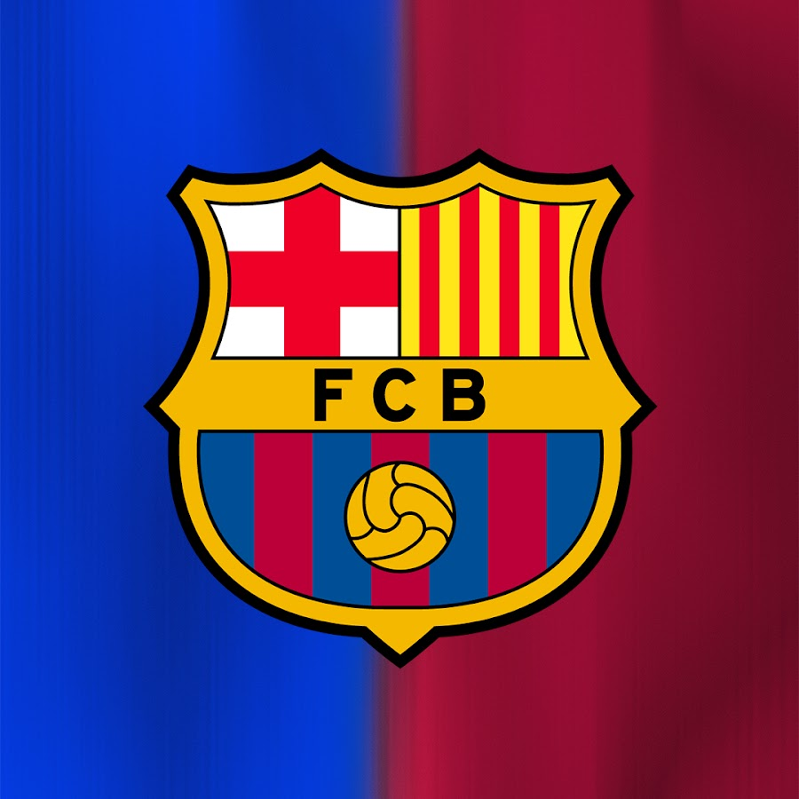
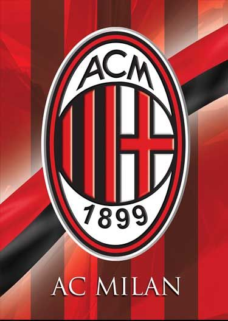
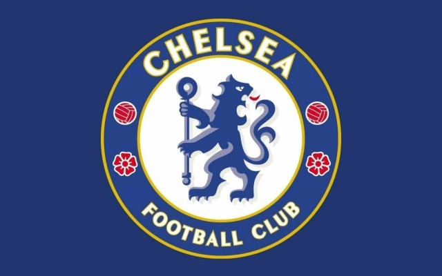

El futbol es el deporte que más sigo y disfruto.
De los 7 a los 10 años, jugué al fútbol en un equipo local llamado los fenix, en los cuatro años en el equipo, logramos quedar campiones dos años en la categoria 2005 y lamentblemente en la categoria 2006 solo llegamos a una final que terminamos perdiendo
Desde ese momento me gusto mas el futbol.
Mis equipos favoritos son:
- Monterrey: Equipo de fútbol mexicano con sede en Monterrey.
- Barcelona: Equipo de fútbol español con sede en Barcelona. 
- Milan: Equipo de fútbol italiano con sede en Milán. 
- Chelsea: Equipo de fútbol inglés con sede en Londres. 
sin duda uno de los mejores equipos de México. Aparte del chupete Suazo, uno de los jugadores que hizo tomarle tanto cariño al club, fue Jonathan Orozco
Lamentablemente cuando me empezó a interesar el futbol europeo, el tridente del Barcelona estaba en sus ultimos momentos de Messi, Suárez y Neymar. Grandosos momentos para la afición.
en estos ultimos años he visto el futbol italiano y sus epocas doradas, aunque lamentablemente no estan en su mejor momento, veo los resumenes para enterame de sus resultados.
Solo lo veo por su estrella Cole Palmer.